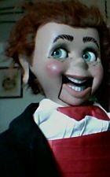

"Willie Winkle"
11/21/2009
{kind=link}

Question: Is the figure in this photo an old Lovik figure? If not, can you tell me who made it?
* * * * * *
Answer: Yes, the figure is a Lovik figure, sold by Maher Studios as Willie Winkle late 1980's- early 1990's. This was probably the most popular character from the Knee Pal line of figures. Several hundred were sold with all their many variations of eye and skin colors; hair styles and colors; combinations of mechanics, with or without freckles of varying arrangements, left or right hand controls, clothing dressed with,etc. With the exception of the fifty or so made for and sold exclusively by Hamacher Schleimer of Chicago for one year, no two were exactly alike. This does appear likely to have been sold by Hamacher Schleimer since all the figures they sold had red hair, green eyes, freckles, and were dressed in a black tux with red bow tie. Production of Willie Winkle was discontinued only because the molds reached the end of their usability.